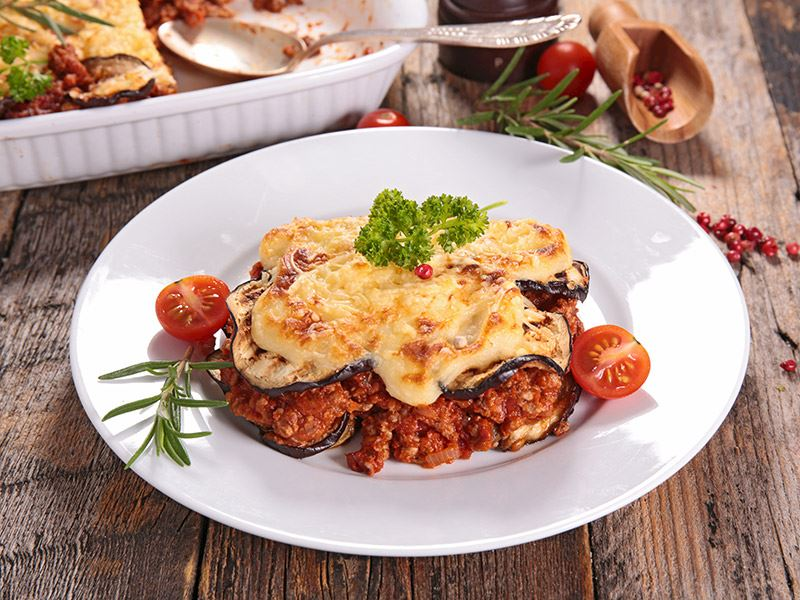
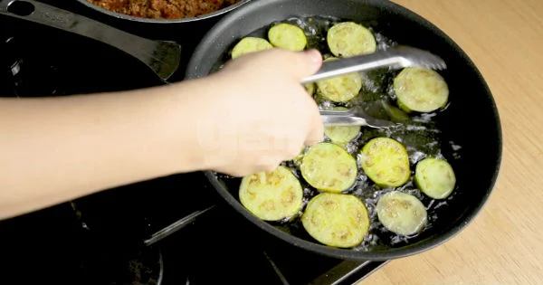

Patlıcan Musakka
yamek olsun!
Türk mutfağının geleneksel yemeklerinde sık sık yer verilen patlıcan; et yemekleri ile harmanlanarak sunulur. Sindirim sistemini rahatlatan bu sebze, Balkan ülkelerinde de tüketilen musakka yemeğinin ana malzemesidir.
Hazırlanma süresi: 15dk
pişirme süresi: 10dk
kaç kişilik: 6 kişilik
kalori: 1 porsiyon için 462/kcal
malzemeler
- 4 tane orta boy çekirdeksiz patlıcan
- 1 tane orta boy soğan
- 300 gr az yağlı kıyma
- 3 tane yeşil köy biberi
- 1 tane büyük boy domates
- 2 diş sarımsak
- 1 yemek kaşığı salça
- 3 yemek kaşığı zeytinyağı
NASIL YAPILIR?
- Sıvıyağını tavada kızdırın ve yemeklik doğradığınız soğanları üzerine ekleyip pembeleşinceye kadar kavurun. Üzerine biberi ilave edip kavurmaya devam edin.
- Kıymayı, salçayı, tuzu, karabiberi ve kimyonu da ekleyip pişirmeye devam edin.
- Küp doğradığınız domatesleri de ekleyip pişirmeye bırakın. Domatesler piştikten sonra ocaktan alın.
- patlıcanları kuruladıktan sonra kızgın yağda arkalı önlü ters çevirerek kızartın.

- Altın rengini alan patlıcanları kızgın yağdan çıkarın ve ayrı bir tencereye dizin.
- Üzerine hazırladığınız kıymalı harcı da ekledikten
Sonra 1 su bardağı su ilave edip 15 dakika pişirmeye bırakın.
- Sıcak olarak servis edin.
- yemek hazır
Afiyet olsun!
sitemizin sonuna geldiniz.bize ulaşabileceğiniz adreasler